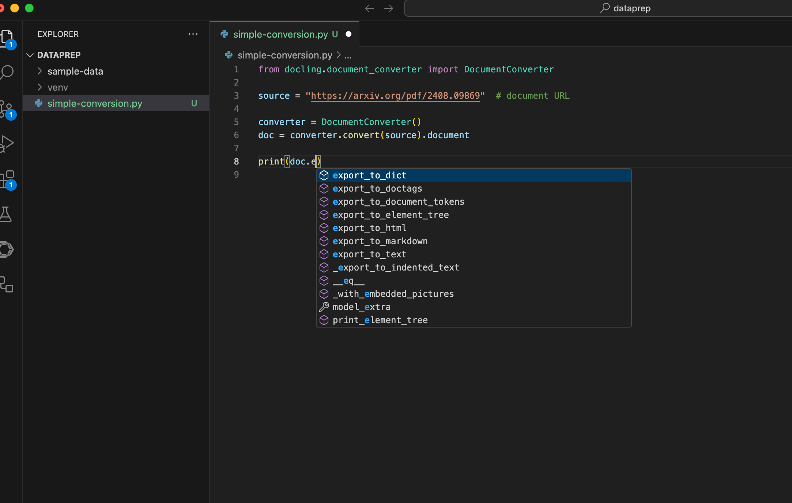

Using Docling as a Library
The Docling CLI and web UI are meant to be used for simple use-cases and for experimenting with documents. The most common way to use Docling in the real-world is as a library to build custom pipelines and integrate with other systems as part of a larger pre-training, fine-tuning or RAG workflow.
This section is a brief introduction to using Docling as a Python library to programmatically perform document conversions. This is only a basic introduction. Subsequent chapters will deal extensively with Docling features like chunking, custom pipelines, and serialization.
Pre-requisites
-
Docling CLI must be installed as outlined in the previous sections using
pipin a Python virtual environment -
Git CLI to clone the sample data files from GitHub
-
Visual Studio Code, or other editors to edit Python code
Lab: Simple Document Conversion
-
If you have not already done it, clone the Git repository containing the sample documents that should be converted, to a folder of your choice.
$ git clone https://github.com/RedHatQuickCourses/genai-apps.git -
All the sample input files and code is in a folder called
dataprep. Change to this folder in the terminal.$ cd genai-apps/dataprep -
If you have previously created a virtual environment and installed Docling, activate the venv.
$ source venv/bin/activateYour prompt should change to indicate that you are now running in an isolated virtual environment.
-
Inspect the
simple-conversion.pyfile in VS Code.from docling.document_converter import DocumentConverter source = "https://arxiv.org/pdf/2408.09869" # document URL converter = DocumentConverter() doc = converter.convert(source).document print(doc.export_to_markdown()) -
Run the program. You can safely ignore any warnings emitted. You should see that the program downloaded the PDF and converted it into Markdown.
$ (venv) python3 simple-conversion.py <!-- image --> Docling Technical Report Version 1.0 Christoph Auer Maksym ... Abstract This technical report introduces Docling ... -
If you are using an IDE like Visual Studio Code, you can mouse over the
docstring in Line 6. Notice that it is of typeDoclingDocument. This object is a runtime representation of the structure and content of the input document. You can then export this object into various output formats, or do some processing on the structure of the input document and then output content. -
On
Line 8in the code sample, delete the.export_to_markdown()method text and enter a.("dot") after thedocobject. The IDE offers you a number of methods that can be invoked.
-
Select the
export_to_text()method and read the documentation for the method. Note that it provides some options to control the amount of output text. ChangeLine 8in the sample code to look like the following:... print(doc.export_to_text(from_element=0, to_element=10)) -
Run the program again, and note that output is restricted to around 10 lines from the output text.